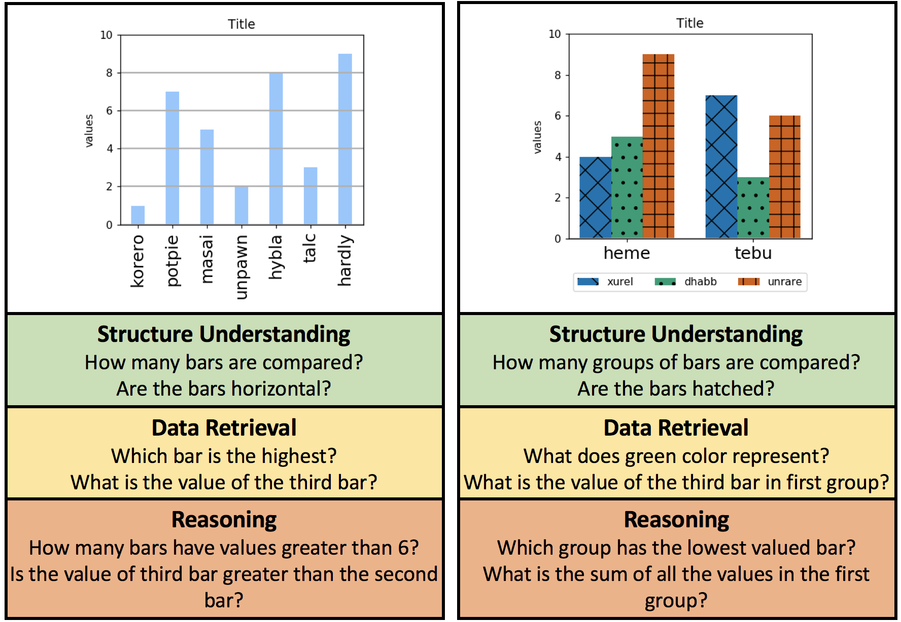

DVQA: Understanding Data Visualization through Question Answering Try live demo!
A synthetic question-answering dataset on images of bar-charts

Data visualizations, e.g., bar charts, pie charts, and plots,
contain large amounts of information in a concise format.
These visualizations are specifically designed to communicate
data to people, and are not designed to be machine
interpretable. Nevertheless, making algorithms capable to
make inferences from data visualizations has enormous
practical applications. Here, we study systems capable of
answering open-ended questions about bar charts, which we
refer to as data visualization question answering (DVQA).
DVQA would enable vast repositories of charts within scientific
documents, web-pages, and business reports to be
queried automatically.
Unlike visual question answering
(VQA), DVQA requires processing words and answers
that are unique to a particular bar chart. State-of-the-art
VQA algorithms perform poorly on DVQA, and we propose
two strong baselines that perform considerably better. Besides practical benefits, DVQA also serves as an important proxy task for several critical AI abilities, such as attention, working memory, visual reasoning and an ability to handle dynamic and out-of-vocabulary(OOV) labels.
DVQA dataset at-a-glance
- 3 different types of questions assessing performance on structure understanding, data retrieval and reasoning capabilities
- 300,000 Images with huge variations in both data and appearance of the bar-charts
- 3,487,194 question-answer pairs completely balanced for simple language biases
- Detailed metadata about every element in the chart